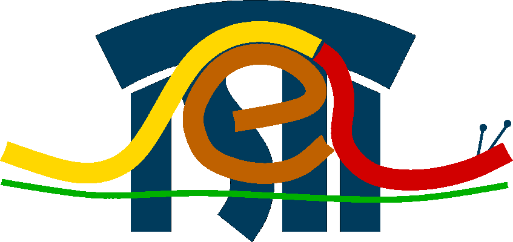

Download Source
(Apache2 licensed)
zxid-1.22.tgz
20141009 - Multivalued attribute matching, valgrind cleanups, changed URL config to BURL
zxid-1.18.tgz
20131126 - Windows and dietlibc support fixes, zxid_httpd
zxid-1.11.tgz
20121114 - major new developments, wrt audit bus, multiple bug fixes
zxid-1.05.tgz
20111209 - timestamp, VPATH, DEBUG conf options, minor fixes
zxid-1.02.tgz
20110725 - Fixed file naming in discovery
Old releases
git clone git://zxid.org/zxid (Anon GIT)
git clone git://zxid.org/pd (Anon GIT)
Please write author for commit access.
Download Binaries
Binaries and Packages Page
Windows, some Linux distros
TAS3 & IoS Reference Implementation
TAS3 Official, ZXID-TAS3 (local)
TAS3 Architecture Docs
Support
ZXID mailing list
zxid.user@lists.unh.edu archives
Documentation
ZXID Book
All ZXID documentation as one convenient 300 plus page monolithic book.
mod_auth_saml
Deploy SAML on Apache w/o programming
Configuration
Nitty gritty on all options
Circle of Trust
Set up a Circle of Trust (aka Trust Network or Federation)
Compile
Install from package or source
zxid_simple() -- Easy API for SAML
API Reference -- Every Function
ZXID Raw API
Program like pros (and fix your own problems)
ZXID ID-WSF API
Make Identity Web Services Calls using ID-WSF
Secure Logging
Digitally signed logging facility
Java -- Using ZXID from Java
Net::SAML -- Using ZXID from Perl
php_zxid -- Using ZXID from PHP
zxididp
Using zxididp to implement IdP, Discovery, IDMapping, and People Services
README.smime
Crypto and Cert Tutorial
FAQ -- Frequently Asked Questions
QA & Test Coverage
LCOV Report on 0.73 (20101219)
Line-by-line test coverage now at 63.0%
Contact
Write to Sampo Kellomäki (sampo % zxidp.org)
No spam, please!
TAS3 Architecture Explained (Video, 15min)
Quotes
Conor Cahill said back in 2006:
IMNSHO, better go Liberty up front and have the confidence that you do not need to upgrade later - or run two parallel systems. The Liberty (or SAML 2.0) system is comprehensive and addresses every use case anyone has thought so far. The percieved complexity is really an implementation issue and not underlying property of the spec. Since we provide an implementation, the "complexity" is not customer problem.
Scott Cantor and Peter Williams said on 5.11.2010 on wsf-dev@lists.openliberty.org
Peter Williams said:I'm guessing that, in the culture that admires dumb clients, that what holds ECP (and cardspace) back is the inability to convince server vendors to commoditize this role for a browser.That, among other things, like the obsession with reinventing all things XML in a misguided effort to dumb down security technologies so that the wrong people can implement them. -- Scott
What is it?
mod_auth_saml: An Apache httpd auth module that does SAML SSO. No programming, just configure Apache, see receipe. Web Master - you need this because it is a config only install, no programming.
SSO servlet and Java libzxidjni.so: A Java JNI extension that wraps libzxid. Also supplied: zxidsrvlet.java that implements SP SSO as servlet, directly integrateable with existing application under servlet engine, e.g. Tomcat.
php_zxid: A PHP extension that wraps libzxid. Also supplied: zxidhlo.php that implements SP in mod_php environment.
Net::SAML: Perl module wrapping libzxid. Also zxidhlo.pl example, implementing SP in mod_perl environment, is supplied.
zxididp: Full featured Identity Provider and Discovery Service, as deployed by ZXIDP.org
libzxid C library for SAML 2.0 federated Single Sign-On (SSO) and ID-WSF Web Services. Many other language bindings are supported through SWIG. IdM Hacker - you need this because it supports all relevant protocols, you will study it and you will contribute patches (thanks).
Status
- 0.82 (20110310) is 1.0 Release Candidate. As of 0.41 (20091120) the package has been mature for doing SSO and other SP related tasks. It also supports perl and mod_perl by way of Net::SAML module, PHP5 (and php4) using php_zxid.so, as well as Java using libzxidjni.so. The Java support includes SSO servlet to be used with Tomcat or other application server.
- mod_auth_saml is fully production grade and can be used to implement SSO to Apach httpd just by configuring (no programming needed).
- zxididp, including ID-WSF Discovery, is beta grade.
- ID-WSF 2.0 WSC and WSP roles are release candidate grade.
- XACML PEP role is release candidate grade.
- Details
- General SAML 2.0 encoding and decoding of messages in C
- Net::SAML perl module that gives access to the C functionality
- php_zxid.so extension for php5 (and php4) roughly equal to Net::SAML
- libzxidjni.so extension for Java roughly equal to Net::SAML
- zxidsrvlet.class for Tomcat enviroment, giving SSO
- SAML 2.0 metadata handling and support for Well Known Location method
- Specific logic for Single Sign-On and Federation using artifact, post, and simplesign-post profiles
- Single logout, defederation, and NameID management
- Some session management and ability to handle discovery bootstrap, ability to start Java HttpSession, ability to pass information from SSO to WSC.
- SP role as a CGI written in C, perl under mod_perl and CGI, php under mod_php, Java / Tomcat, shell script CGI, and as Apache httpd auth module (mod_auth_saml)
- IdP role written in C
- Command line WSC testing tool (zxcall)
- ID-WSF 2.0 Discovery WSC role in C, perl, php, and Java
- ID-WSF 2.0 Discovery Service (WSP) role in C
- General ID-WSF 2.0 WSC role in C, perl, php, and Java
- General ID-WSF 2.0 WSP role in C, perl, php, and Java
- Encoders and decoders for SAML 2.0 (most mature), SAML 1.1, Liberty ID-FF 1.2, Liberty ID-WSF 1.1, Liberty ID-WSF 2.0, XACML 2.0, and many more.
- XACML 2.0 PEP role in C, perl, php, and Java
- XACML 2.0 PDP role in C, but without XACML rule evaluation engine (i.e. we use proprietary rules)
ZXID is the Refecence Implementation of the Core Security Architecture of TAS3.
ZXID aims at providing open source implementation of the Internet of Subjects Personal Data Store (IoS-PDS).
ZXID is member of OpenLiberty.
ZXID supports Kantara Initiative.

ZXID AXIS2 integration by ISTI-CNR LabSE.
 ZXID supports strong authentication using Yubikey USB token from Yubico.
ZXID supports strong authentication using Yubikey USB token from Yubico.
[Bertolino12] A. Bertolino, et al.: "Enhancing Service Federation Trustworthiness through Online Testing", IEEE Computer, January 2012 (vol. 45 no. 1) pp. 66-72, 2012. DOI
Run-time dependencies
ZXID uses OpenSSL for all of its crypto (your distro should already have this).
 ZXID uses libcurl as HTTP(S) client (your distro should already have this).
ZXID uses libcurl as HTTP(S) client (your distro should already have this).
 ZXID uses zlib for compression (your distro should already have this).
ZXID uses zlib for compression (your distro should already have this).
Full regeneration dependencies
(usually not needed to compile ZXID)
ZXID uses Plaindoc to generate code (xsd2sg.pl) and documentation (pd2tex).
 ZXID uses SWIG to generate its language bindings.
ZXID uses SWIG to generate its language bindings.
Other Projects by Sampo
NATO STANAG 5066 implementation Open5066.org, local copy.
SMIME utility and perl module here
Net::SSLeay perl module here.